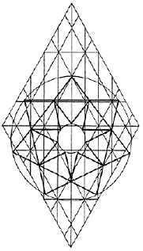
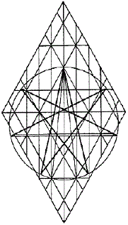

The Morning Star
The seven-point star appears by a doubling of the the cubit of the vertical Adam Kadmon and by then plotting its course, end to end, along the circumference of the longest angles of the stars appearing in the churches at Smyrna, Pergamos, Philadelphia, and Thyatira.
Note that the acute septagram's
center hugs the Tipareth court of the primary Trees of Life,
and that the obtuse version (below) reaches the same measurement
in the kindred Morning Star symbol, when an inverted seven-point
star is positioned at the inward points of its perimeter.
Stars with seven points are
used as religious symbols or as aids to meditation by diverse
sects within several religions. Seven/zayin is the completion potential of thrust, as depicted
in the beating wings of a bird. The esoteric version of the Morning
Star depicted on the right is a symbol used by the Pawnee Nation.
The text on the message to the church at
Thyatira offers an interpretation.
Note that the inward circle of the Morning Star
equals the cubit of the
vertical Adam Kadmons within the Crown Diamond display. The emblem
celebrates union: seven encircling six, as
six
encircles five,
etc.